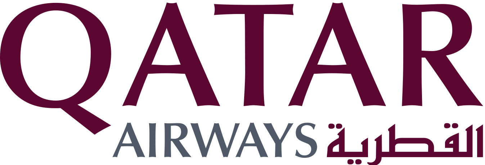
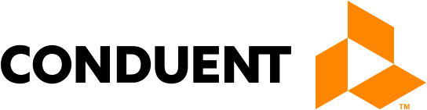
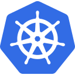
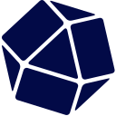

.NET Guide
C#, ASP.NET Core, APIs, dependency injection, async code, testing, and cloud-ready application design.
Guide planned↗
 Quality-AI
Quality-AI
 Smart Drive
Smart Drive








Explore technology through clear visual guides, architecture flows, hands-on implementation paths, and the decisions that shape reliable systems—from AI foundations to databases, cloud, and delivery.
Start with a focused guide, then follow the connections between languages, platforms, architecture patterns, and data systems.
From statistical foundations and classical algorithms to deep learning, transformers, RAG, agents, and production operations.
Explore Azure architecture by service family, with official icons, modular learning chapters, request flows, and real .NET implementation guidance.
Navigate AWS foundations, application platforms, data, AI, and operations with official architecture icons and practical .NET SDK patterns.
C#, ASP.NET Core, APIs, dependency injection, async code, testing, and cloud-ready application design.
Understand patterns through tradeoffs, interaction diagrams, code examples, and real system use cases.
Build a clear mental model of the language, browser runtime, asynchronous flow, modules, and modern tooling.
Learn ownership, borrowing, lifetimes, error handling, safe concurrency, and systems programming by building.
Explore Go syntax, interfaces, goroutines, channels, service development, and pragmatic concurrency.
Practice relational modeling, query plans, transactions, and performance with SQL Server and PostgreSQL.

In roadmapFollow code to production: source control, CI/CD, containers, infrastructure as code, observability, and reliability.

Compare document, key-value, time-series, graph, and vector databases by data model and workload.
Map Google Cloud services across data, AI, application platforms, identity, networking, and operations.
No guide matches that search. Try “cloud”, “database”, or a language name.
Understand core concepts, vocabulary, and the problem each technology solves.
See how requests, data, identity, and control move through real architectures.
Use progressive examples, real code, and practical projects to make concepts stick.
Explore security, reliability, performance, cost, and maintainability tradeoffs.